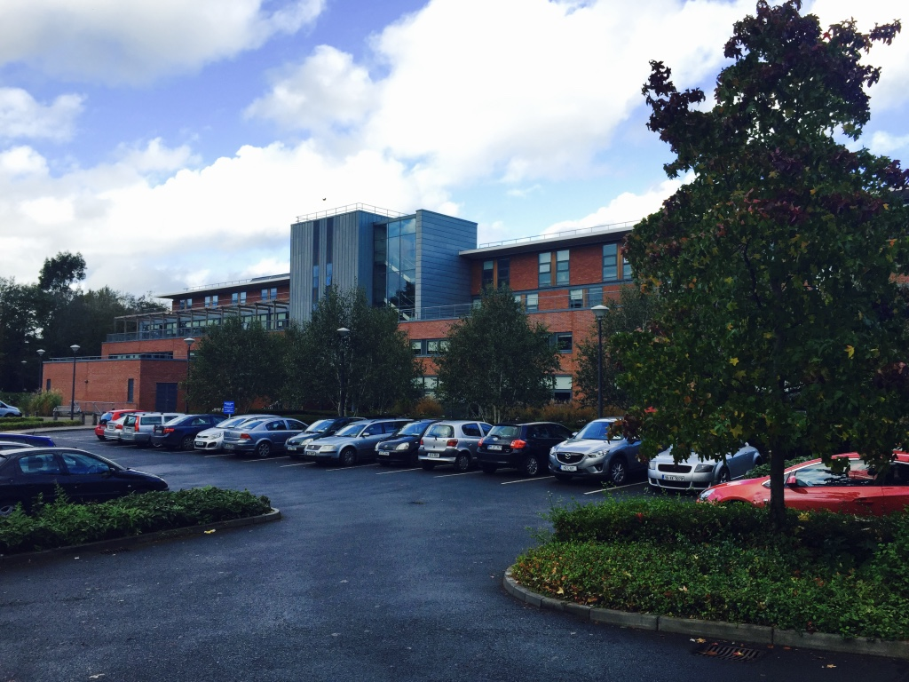
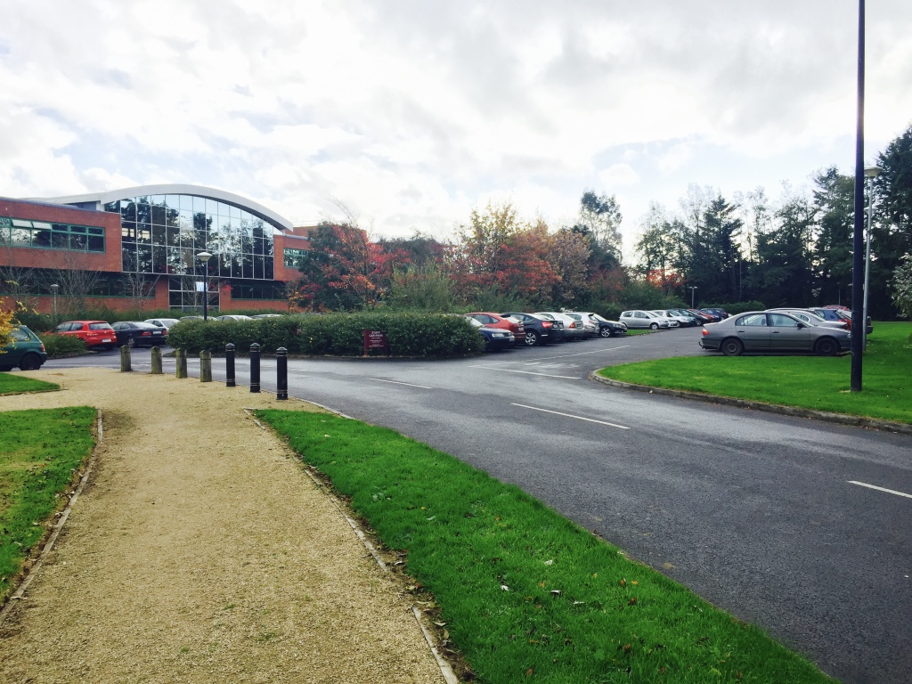

Kemmy Business School
Useful Information
General Information
The Kemmy Business School (KBS) was completed in 2007 by RKD Architects. The main discipline is business. With an area of 5,800m2 and home to almost 100 members of staff, the KBS is one of the largest business schools in Ireland. The KBS prepares graduates for rewarding careers in business management and related professions. The product of a capital investment of €22.5m, the state-of-the-art KBS facilities are second to none; they include a simulated Wall Street-style trading room (the first of its kind in any Irish university), executive-style teaching rooms, specialist laboratories for HRM teaching and practice, a marketing technology suite, a student enterprise centre and a mini-conference centre based around a 350-seat lecture theatre. Home to almost 3,000 students, the KBS offers a wide range of business and management education programmes, both on campus and at external locations throughout Ireland.
KBS Website
Welcome to the Kemmy Business School. If you want to know more about the KBS, click below to go to our official website.
KBS Website
Cube Café
The newly refurbished Cube Café offers customers a bright, healthy and comfortable space to relax in. Try out the great-tasting coffee from our Java City coffee bar or our made-to-order sandwiches and seasonal hot dishes.
Cube Café WebsiteNearest Car Park
Car Park 16: Staff Car Park
Guide Me There
Car Park 17: Pay Car Park
Guide Me There
Car Park 23: Public Car Park
Guide Me There